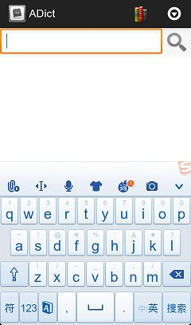
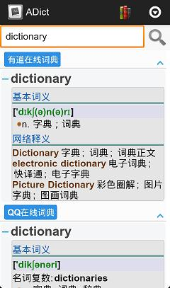

基本功能
-
字典安装
将字典文件解压到手机SD卡中的/adict/books文件夹中。通常解压后会得到与字典名称对应的文件夹，如下图。解压后重启ADict即可。
-
单词查询
在单词查询框中输入要查询的单词，然后点击“查询”按钮或点击下拉单词列表中的单词项即可。在当前的查询结果中，用户也可以点击词典右侧的“”或词条左侧的“
 ”实现对词典或词条的隐藏。/p>
”实现对词典或词条的隐藏。/p>

高级功能
- 激活/禁用词典
打开ADict，点击右上角的字典管理图标进入字典管理页面。在字典管理页面下，点击字典右侧的选择框即可激活/禁用选中的词典。
- 设置词典优先顺序
在字典管理页面下，按住词典左侧的图标可在词典列表中拖动所选中的词典。当词典被拖动至合适位置时，松开手指将词典放下。今后ADict在进行词典查询时就按照此列表中的词典顺序进行查询显示。
|  |
进阶扩展
- 样式自定义
每次查询完毕，ADict均会在SDCARD上的ADict文件夹下产生index.html文件。用户可以通过调整修改index.html相关的stylesheet文件及javascript文件实现对查询结果及样式的修改。
- 功能扩展
请参考QQ在线词典的实现。QQ在线词典的全部实现文件都在ADict文件夹下的books/qq_online目录下。